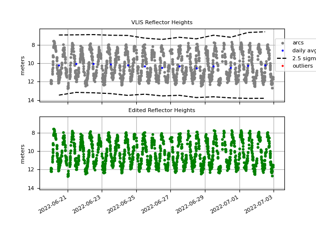

Vlissingen

Station Name: vlsi or VLSI00NLD
Location: Vlissingen, the Netherlands
Archives: SONEL, BKG, BEV
Take a Quick Look at the Site Reflection Zones
The EUREF Page page has a lot of information about the GNSS site here. It is currently tracking multiple GNSS constellations.
If you are going to try and measure water levels, it is important to look at the reflection zones
around the site. This will allow you to set a good mask.
Type VLIS into the station name and first use the defaults at this web site.
Try different azimuth constraints. I recommend only using 5-15 degree elevation angles.
Note that the height of the antenna above sea level is provided by the web app and returned on the right hand side.
Another thing you should try to do is get an idea of what the tidal range will be. At VLIS, there is a colocated tide gauge. There are other ways you can get the tidal range without a colocated tide gauge sensor - e.g. there are various web sites that will at least give you high and low tide predictions.
GNSS-IR has a Nyquist. While I won’t discuss it here (see Roesler and Larson, 2018 for details), it is an issue at VLIS. The easiest VLIS data to find are the 30 second data deposited by geodesists at various global archives. This sample rate would be fine for an antenna 6 meters above the water e.g. But at VLIS - with the known tidal range - we are really too close to the L1 Nyquist to use 30 second data. You can use the 30 second data for L2/L5, but you are basically throwing away half your data if ignore L1.
So what can you do? The good news is that this site reliably reports high-rate GNSS data.
The bad news is that the sample rate is 1 second. And you do not need 1 second data for this site; 15
second data is fine. If you retain the 1 second data, all the gnssrefl programs will be pretty slow.
To get you started so that you don’t have to download and manipulate 1 sec GNSS files (which come
in 96 separate files!), I have made some smaller 15 second RINEX files for you. They are
available in this tar file.
After downloading, tar -xvf vlis_tar.2022. There should be 14 gzipped files in RINEX 2.11 format.
Instead of using gnssrefl I am going to show you how to use the web app. Open a browser and
type in gnss-reflections.org. You will be using the RINEX upload option which is in the center.
Load one of the RINEX files and press the submit button. Depending on your internet connection, your
answer should pop up in about 10 seconds. The writing in magenta are comments I have added to
point out various things.

So what’s going on here? (If you have never used this site before, I recommend you give a look to the frequently asked questions page.) First, the most dominant reflections (which are colored) are coming from the west. But this is where we should expect them. There is a large slab of concrete there and it looks like it is about 6.5 meters below the antenna. The area pointing to the ocean is showing up in gray in the periodograms (and also gray in the azimuth plot below) as unsuccesful. That is because the defaults we used in our analysis strategy (RH ranging from 0.5 to 8 meters) does not include the right answer. And that is why we can’t see the tides.
Second attempt. Make the following changes:
the RH range (5 to 18 meters) to include the right answer (10 meters) and the tidal range (plus/minus two meters).
Use elevation angles of 5 to 15 because those looked best when we ran the reflection zone app.
Change the minimum amplitude to 2.
Use the L1L2CL5 frequency option. (default was L1 only)
set the azimuth range to 70 to 180
Make sure your RINEX file is loaded and hit submit.

Now you can see a broad swath of “successful” retrievals in the azimuth range you chose. The RH changes in the top plot (azimuth on the x-axis) are the tides. The reflector height answers are written out to a text file. Use the link called Numerical Results. You will see L1, L2C, and L5 retrievals all together. The most retrievals are generally from L1 - because every GPS satellite has L1. The second most are L2C (at least 24 satellites) and the fewest are L5 (I am not sure how many L5 transmitting satellites there are, but it is fewer than L2C).
I also have a bash script that will allow you to more automatically query the API. Generally people install the python code or the docker instead.
If you are using the github install of gnssrefl and
have Python 3.9 or the docker image
installed, you can do this on your local machine. The advantage of doing it on a local machine is mostly that you can use multi-GNSS
signals. The web app is GPS only. For applications with a daily average, such as snow accumulation,
GPS can be enough. But for tides you generally want as many measurements as
possible, and that means multi-GNSS. The other
advantage of the using the gnssrefl package is that you can more easily use higher-rate data.
The web app strictly controls the maximum RH you can estimate and it also limits how large your RINEX
file can be. gnssrefl also provides links to many more data archives.
Make SNR files
To make your own 15 second multi-GNSS VLIS files with rinex2snr you need to :
station vlis00nld (the longer station name will tell the code to find RINEX 3 instead of RINEX 2.11)
rate high
dec 15
archive bkg
orb gnss
Take a Quick Look at the Data
Begin by making SNR files:
rinex2snr vlis00nld 2020 171 -doy_end 184 -rate high -dec 15 -orb gnss -archive bkg
Then use quickLook to make sure your strategy is a good one, where you should try using different frequencies and the RH, elevation angle, and azimuth settings.
quickLook vlis 2020 171
This is the strategy I used:
make_json_input vlis 0 0 0 -h1 5 -h2 15 -e1 5 -e2 20 -peak2noise 3 -ampl 1 -allfreq T
Edit the json file and change the azimuth ranges of 0-90 to 70-90 and delete the western azimuths. Be careful when editing the file so that the commas and such are in the right places.
Now run gnssir for these same dates. This computes RH for each rising and setting satellite arc:
gnssir vlis 2022 171 -doy_end 184
To put those results all together:
subdaily vlis 2022
Reports how many satellites were used in each constellation:

How the water levels look as a function of azimuth, constellation, and amplitude:

Time series with large outliers removed.
{kind=link}
For comparisons with the local tide gauge you can use our utility download_ioc. The tide gauge name is … vlis!
You just provide the time periods (I think it is currently limited to 30 days). If you say -plt T it makes a crude
plot for you.
Additional corrections can be made using the rhdot T setting. I will add more information here when I get a chance.
Kristine M. Larson August 29, 2022